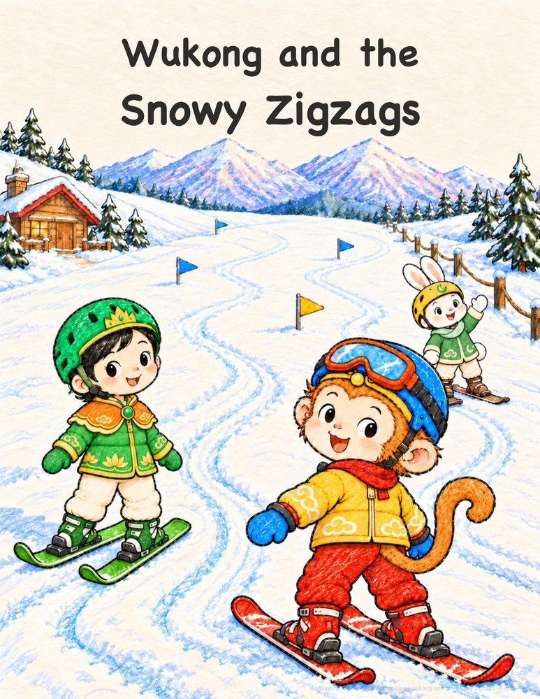

Wukong
Wukong 
Wukong and the Snowy Zigzags
Wukong and Princess Iron Fan learn to ski, one snowy zigzag at a time. Jade Rabbit cheers them on, and warm cocoa and fish crackers make a happy finish.
English bedtime picture book · About age 4 · Free to read and print
Read a little adventure.
Turn the page with the buttons, arrow keys, or a swipe.
This page could not load. Please try again, or download the PDF.
Download PDFWukong and the Snowy Zigzags
© 2026 Peihong GuoLicensed under CC BY-NC-ND 4.0
Page 1 of 18
Keep a copy for later: Download PDF
How do I print a little book?
Download the booklet edition. Print on US Letter, landscape, double-sided with short-edge flipping, at actual size / 100%, one PDF page per sheet, in normal page order. Each PDF page already contains two book pages.
The print booklet has 20 pages, including covers and an author page. The inside back cover is intentionally left quiet.
This book uses 5 sheets, with 0 blank book pages added at the end. Nest the sheets, fold through the center and staple along the fold.
Editions and print files
AI-assisted creation with human direction and editing. Each edition keeps its own text and illustrations. Reading and booklet PDFs carry a subtle attribution watermark.
- v1 — Reading PDF · Booklet PDF
- v2 — Reading PDF · Booklet PDF
- v3 — Reading PDF · Booklet PDF
- v4 — Reading PDF · Booklet PDF
- v5 — Reading PDF · Booklet PDF
- v6 — Reading PDF · Booklet PDF
Help the next story grow.
Stories are free to read and print. If you and your child enjoy them, you are welcome to support more stories.